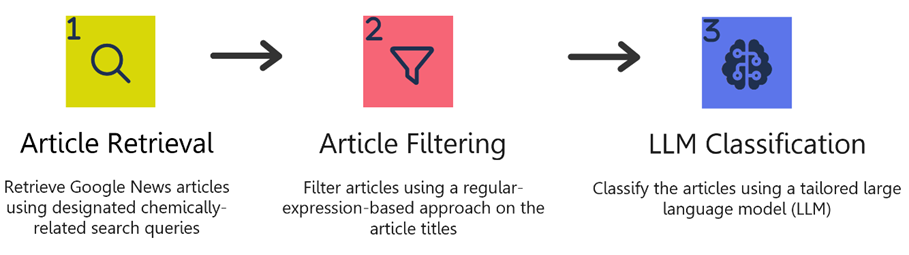
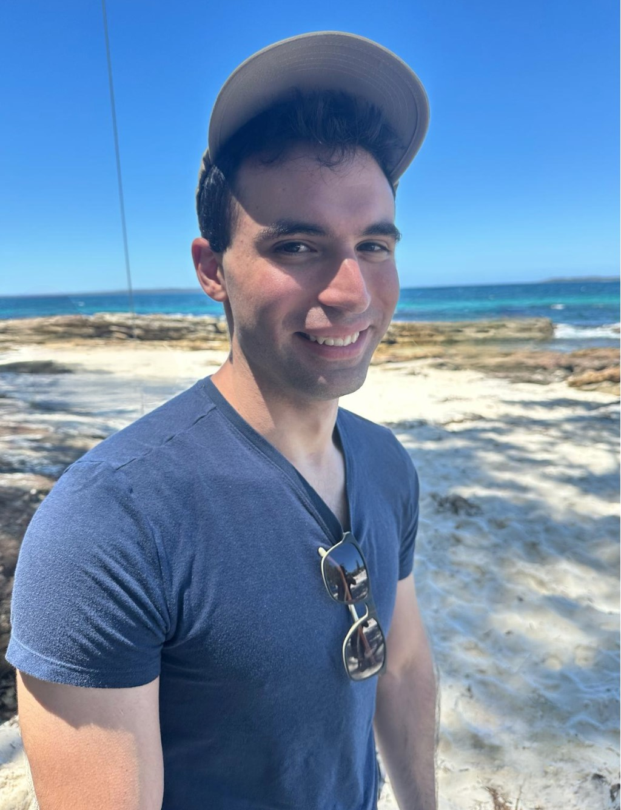
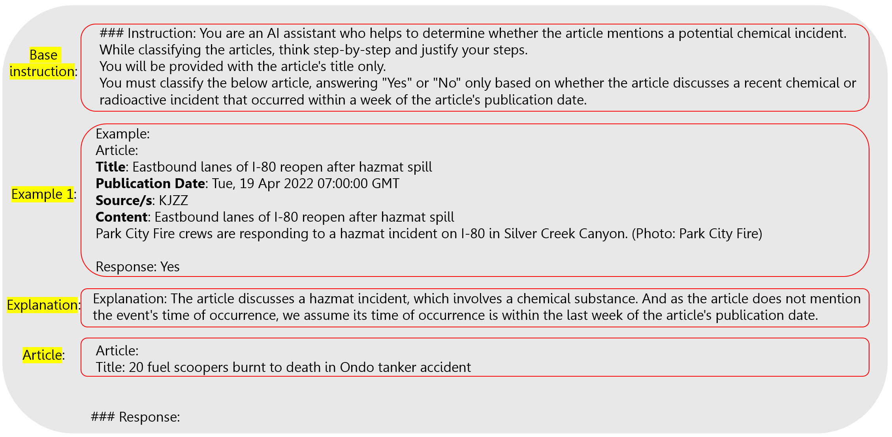
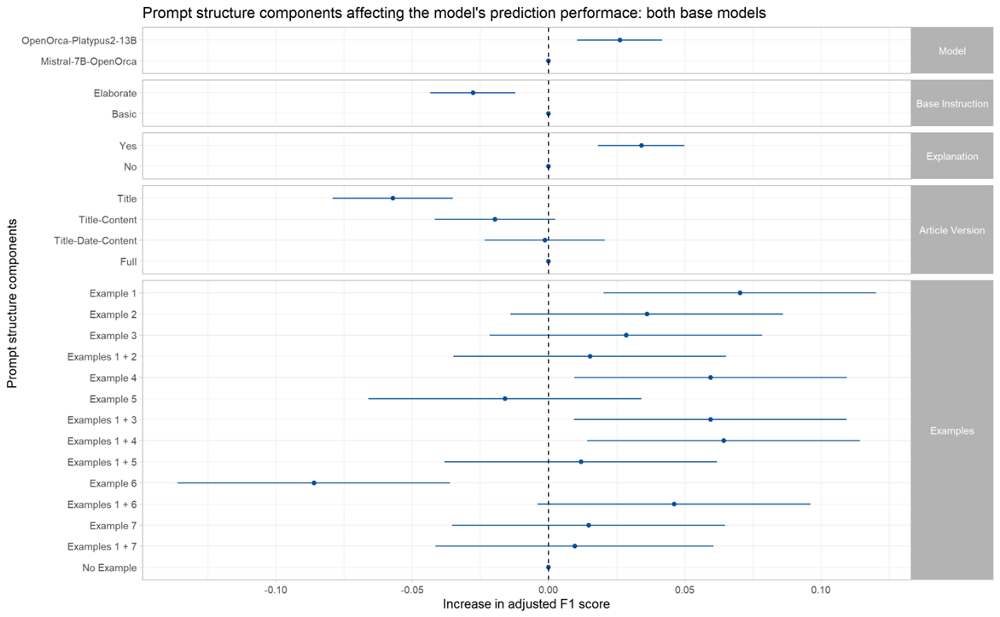
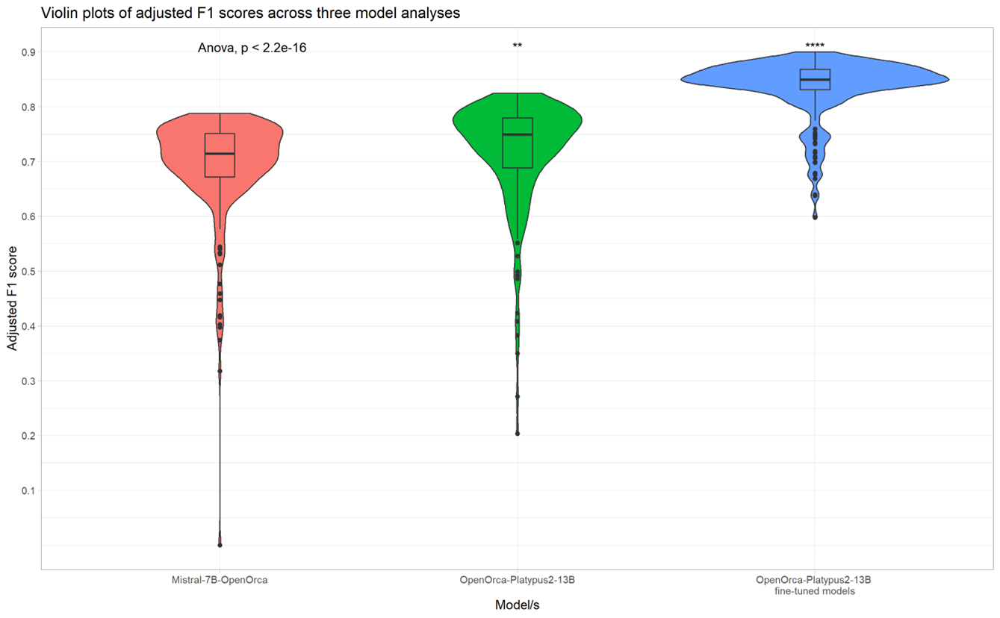

Developing CHEMIWATCH: A Dissertation Journey
Health Data Science
Large Language Models (LLMs)
Prompt Engineering
Emmanuel discusses real-time surveillance of chemical incidents using large language models

Emmanuel graduated with his master’s degree in 2023, having focused his dissertation on real-time surveillance of chemical incidents using large language models under the guidance of his supervisors from EPIWATCH (A/Prof Samsung Lim, A/Prof David Heslop, and A/Prof Deepti Gurdasani). He lives in Bendigo, Victoria, enjoys the outdoors, and is always up for a good parma!
Why is chemical surveillance important?
Whilst humanity is reliant on chemicals for all aspects of modern life, the ever-increasing risk of chemical incidents is growing, potentially having profound consequences on human health. Defined by the World Health Organisation (WHO) as “the uncontrolled release of a toxic substance, potentially resulting in harm to public health and the environment”, chemical incidents have affected over 1.85 million people worldwide between 2000 and 2020. Compared to infectious disease outbreaks, the impacts associated with chemical incidents can occur very rapidly, requiring quicker response to treat those exposed and prevent ongoing health effects and injuries.
Although the National Incident Centre in Australia coordinates responses to health emergencies including chemical incidents, there is currently no national surveillance system that collates and reports chemical incidents in Australia. With increasing volumes of data on the internet, and particularly in news articles, an event-based early warning system using publicly available sources has the potential to provide rapid intelligence for the detection of public health events, benefiting both authorities in enhancing preparedness and the public in receiving timely alerts and information.
How can we retrieve and analyse these data?
Large language models (LLMs), which are essentially deep neural networks trained on extensive text datasets using billions of parameters, have emerged as state-of-the-art artificial intelligence (AI) systems designed to handle and generate text with the aim of delivering coherent communication. Nowadays, everyone uses LLMs daily for tasks such as generating text for emails, composing social media posts, drafting essays, conducting research, and seeking answers to questions, all facilitated through platforms like ChatGPT, Bard, and others.
Using LLMs, one can utilise the pre-trained base models in text classification tasks using only base instructions or also exemplars showcasing the desired output. Such inference tasks are known as “zero-shot learning” and “few-shot learning” tasks respectively, owing to the zero or few attached prompt examples. However, such general untailored models may underperform in prediction. A solution to that is employing supervised training and fine-tuning an LLM to a specific task, resulting in better prediction.
After assembling diverse search queries (n=6,646) combined from several governmental and intergovernmental lists of chemicals (such as chlorine leak and poisonous chemical release), I used these to collect Google News articles, which were later filtered according to their titles to create a dataset with at least 25% relevant articles. Having labelled those articles, I then evaluated the performance of 648 different LLMs in predicting their correct labels (Yes: An article discussing a chemical incident that occurred within the last week, No: An article that does not discuss a chemical incident that occurred within the last week).
Why so many LLMs?
As we all know, we interact with LLMs using natural language. Therefore, these models’ performance depends also on the quality of their provided instructions. Good explanatory instructions (or prompts) can enhance performance, whereas some other prompts can bias the results and sway them one way or another. Finding the best prompt for a given task is termed prompt engineering and has been a central focus of my project.
I systematically searched for the best prompt by constructing my prompts, combining four prompt sections in various permutations. Additionally, I tested these with a smaller model (7B LLM) versus a larger model (13B LLM). These four sections include the base instruction given to the LLM, the example included in the prompt (seven diverse and representative examples were carefully picked and numbered by their word length), the explanation provided to the attached example (or lack of thereof), and the article version (full article, title-only article, title-content article, or title-date-content article). Below is an example prompt:

So what boosts LLM performance?
After completing 432 LLM analyses (each one with a testing set of 500 articles), I computed the analyses’ F1 scores adjusted for unproccessed prompts, and modeled them in a linear model by the prompt components of each analysis, as presented in the figure below. As expected, larger models with more parameters overall improve performance, whereas elaborate and long instructive prompts decrease performance. Furthermore, attaching explanations to examples’ classifications or more article information also improve the model’s prediction (although only statistically significantly when comparing title-only articles to full articles or title-date-content articles). When it comes to examples, the trend is not uniform – the LLM’s performance depends on the example’s content. All examples either increase or do not significantly change performance, besides example 6. This example describes several chemical explosions, apparently causing the model to pick up articles mainly describing chemical explosions, disregarding other incident types.

So far, no supervised training was done, and general base models were used for prediction. By fine-tuning a model to a specific task we can boost its performance, but like any machine learning model, we should be mindful of the risk of overfitting. Therefore, I then carefully fine-tuned several LLMs with different prompt structures and analysed their performance across 216 evaluations, and found that fine-tuned 13B models overall outperformed base 7B and base 13B models. Some analyses achieved F1 improvements of more than 10%, reaching a performance level of 90%.

Conclusions and future applications
We learnt that:
- LLMs can be used to effectively classify recent chemical incident articles.
- The prompt’s structure can dramatically affect the model’s performance.
- Bigger models overall perform better than smaller ones.
My supervisors and I are currently in the process of drafting our paper detailing the findings and scope of my project, and will embed our most efficient CHEMIWATCH model for real-time news article classification in EPIWATCH’s systems.
On a personal note
Thanks to my project, I’ve gained substantial knowledge and shifted from working with theoretical datasets to real-world data that have direct implications in people’s daily lives. I applied the tools and techniques I learnt in my courses and acquired new ones independently. In particular, I expanded my knowledge in Natural Language Processing (NLP) and LLMs and started coding confidently in Python, whereas before my project, I was mainly proficient in R.
Therefore, if a dissertation project may seem intimidating at first, don’t be and take the challenge! 🙂 Your supervisors are always there to guide you and also direct you to the right resources. In the long run, it’ll benefit you immensely personally and professionally.
Lastly, a dissertation will open many doors in the future. Having such experience is invaluable in the professional world and will also broaden your opportunities for pursuing a PhD in the future, should you choose that path.
Here’s to your ongoing progress and success with your dissertation! 🌟